Use Case
In the traditional way of building applications, the applications directly talk to each other. And if one of the applications goes down, it impacts the other application and some of the data might be lost. This is called tightly coupled architecture.
To make the applications more highly available, the applications don’t talk to each other directly, but through SQS Queue. In the below diagram, the Customer Web Applications interacts with the Backend Applications via SQS Queue. For some reason if the Backend Applications goes down, the Customer Web Application can still continue working with the messages being buffered in the SQS Queue. Once the Backend Application is up, it can start polling the messages from the SQS Queue and update the database. This way none of the messages are lost and applications are loosely coupled and not aware of the status of each other.
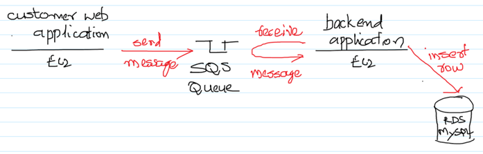
AWS Services: SQS, EC2, IAM and RDS
-- Make sure to create a Security Group with the port 3306 allowed in the “Inbound rules”.
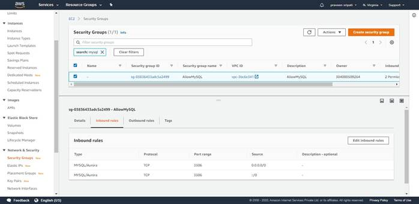
-- Go to the RDS Management Console and click on “Create Database”.
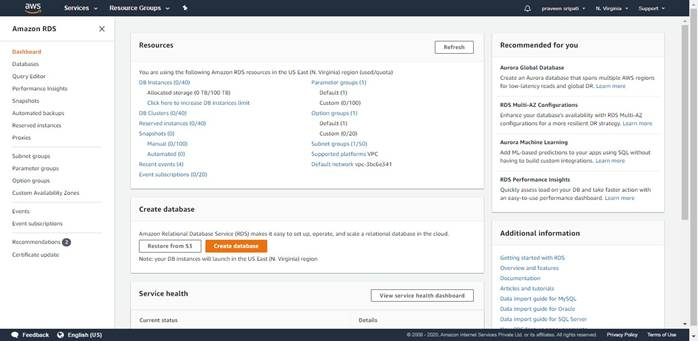
-- Select MySQL as the Database.
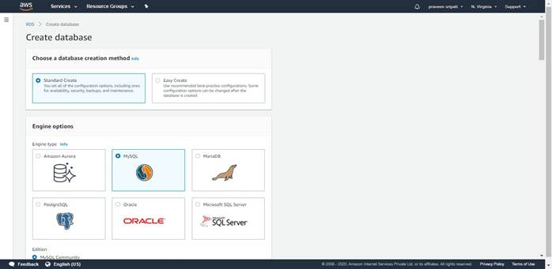
-- Select “Free tier” for the templates. This will make sure all the settings for the RDS are for the AWS Free Tier (https://aws.amazon.com/free/). Specify the “DB instance identifier” as CustomerDB.
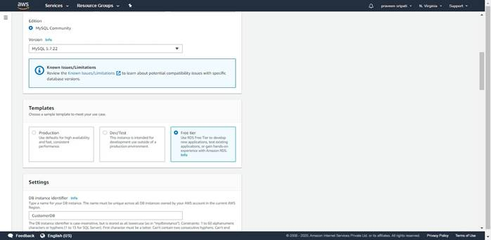
-- Specify the username and the password.
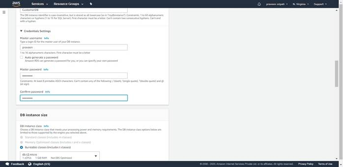
-- Uncheck “Storage autoscaling”.
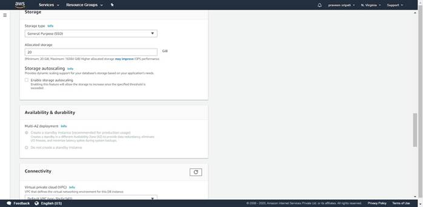
-- Under Connectivity, for “Publicly accessible” as Yes.
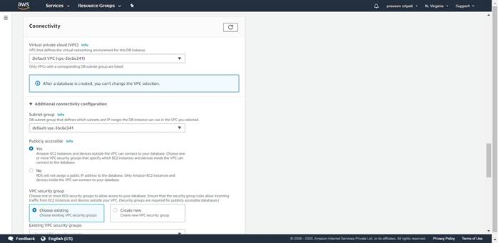
-- Select the AllowMySQL Security Group created earlier.

-- For the “Initial database name” specify “customer_db”. Disable the Backup.
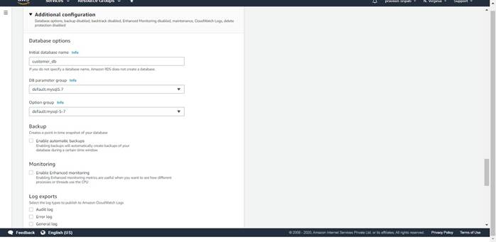
-- Finally click on “Create Database”.
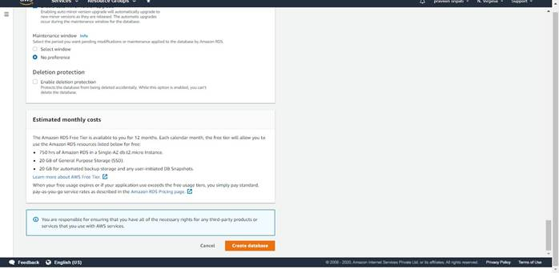
-- The database would be initially in a Creating Status for a few minutes.
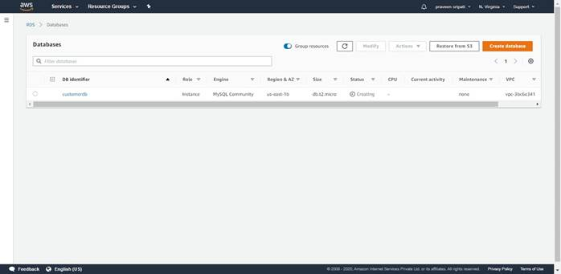
-- After a few minutes the database should be in available status and the endpoint would be populated.
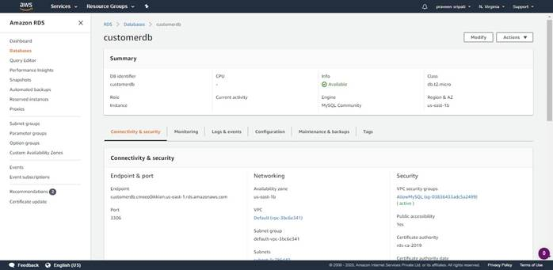
-- Download the HeidiSQL (https://www.heidisql.com/download.php) by clicking on “Installer, 32/64 bit combined” and install it as any other application.

-- Launch HeidiSQL once the installation is complete and enter the RDS/MySQL endpoinp/user/password. And finally click on Open.
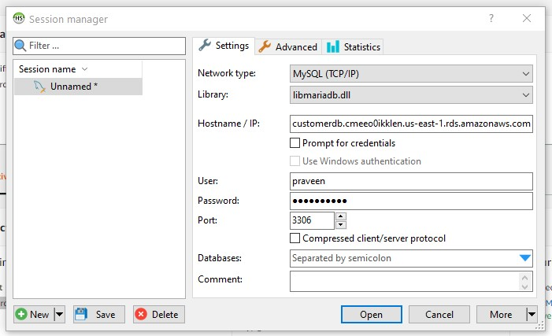
-- Click on Yes when prompted. This will store the connection details.
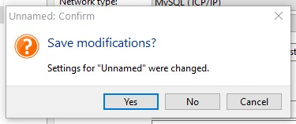
-- In the HeidiSQL make sure to select customer_db in the top left pane, go to the Query tab, copy the below DDL statement and click on Execute to create a table.
CREATE TABLE customers (
name VARCHAR(30) NOT NULL,
address VARCHAR(30) NOT NULL
);
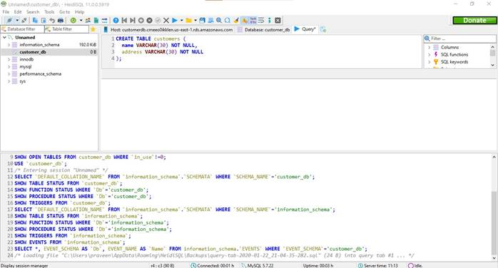
-- Go to the SQS Management Console and click on “Create Queue”.
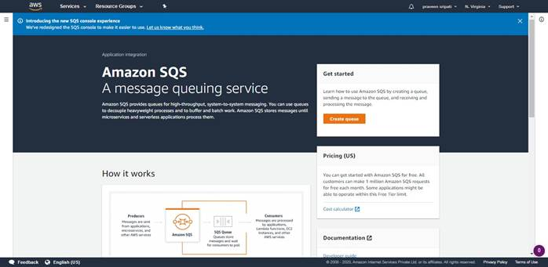
-- Enter the Queue name as “CustomerQueue”, go with the default options and click on “Create queue”.
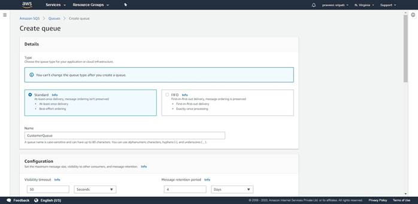
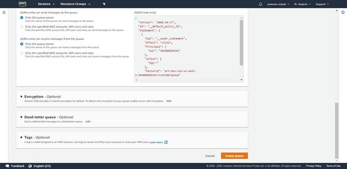
-- Note down the Queue URL and the ARN.
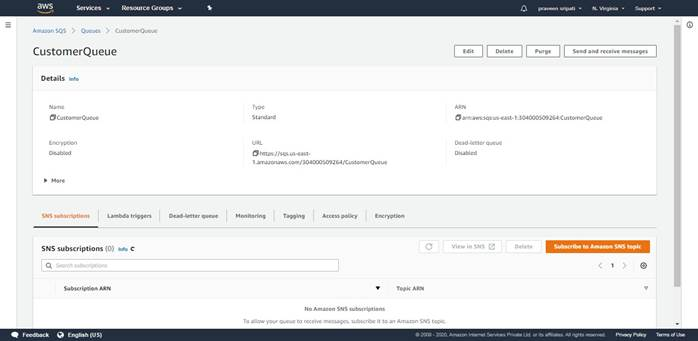
-- Go to the IAM Management Console and go to Policies. Click on “Create Policy”.
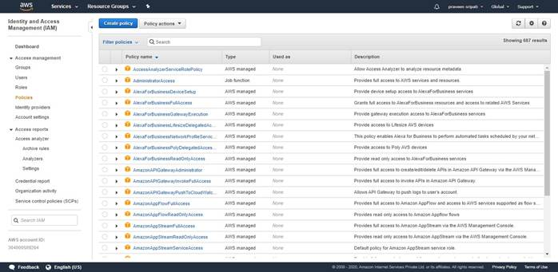
-- Click on the JSON tab and paste the below JSON. Make sure to replace the Queue ARN with the one got from the previous step. Click on “Review Policy”.
{
"Version": "2012-10-17",
"Statement": [{
"Sid":"SQSSendMessage",
"Effect": "Allow",
"Action": "sqs:SendMessage",
"Resource": "arn:aws:sqs:us-east-1:304000509264:CustomerQueue"
}]
}
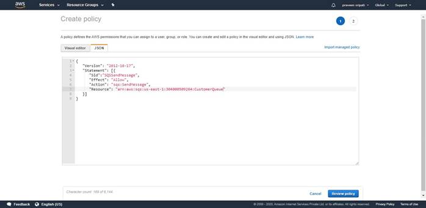
-- Enter the policy name as “SQS_SendMessage_Policy” and click on “Create policy”.
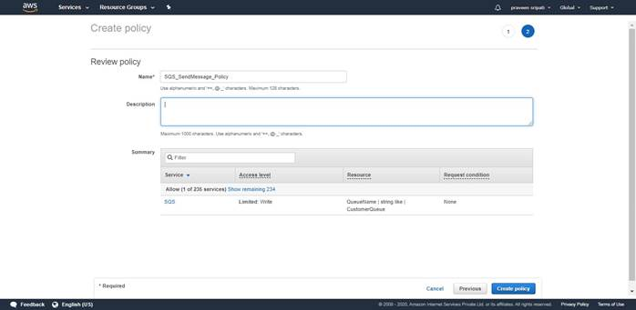
-- Click on Roles and click on “Create Role”.
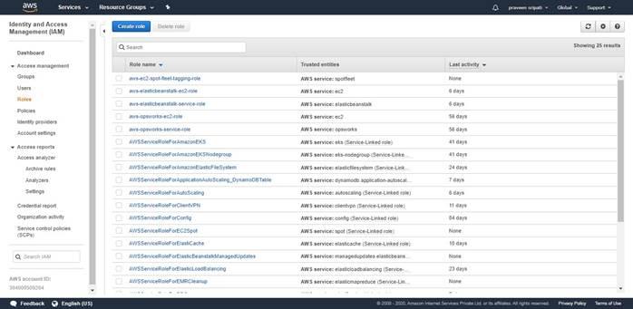
-- Select EC2 as the service and click on “Next Permissions”.
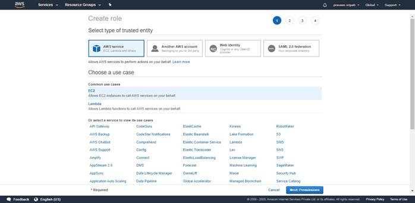
-- Select the Policy create in the previous step and click on “Next Tags”.
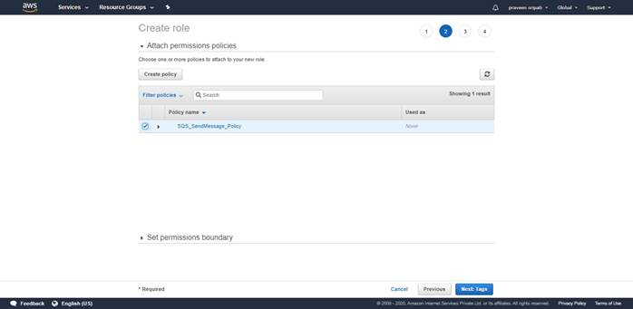
-- Tags are optional. Click on “Next Review”.
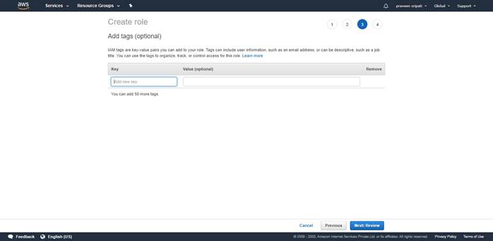
-- Enter the Role name as SQS_SendMessage_Role and click on “Create Role”.
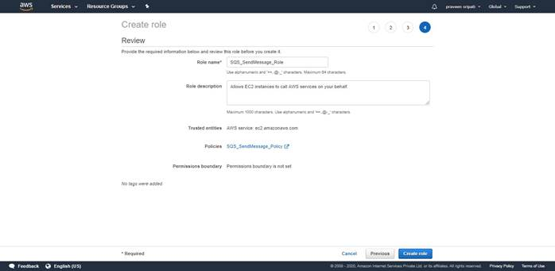
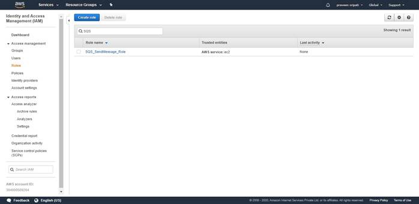
-- Create another Policy called “SQS_ReceiveDeleteMessage_Policy” with the below JSON. Make sure to replace the SQS Queue ARN. Create a role called “SQS_ReceiveDeleteMessage_Role” and attached the Policy to it.
{
"Version": "2012-10-17",
"Statement": [{
"Sid":"SQSReceiveDeleteMessage",
"Effect": "Allow",
"Action": ["sqs:ReceiveMessage" ,
"sqs:DeleteMessage"],
"Resource": "arn:aws:sqs:us-east-1:304000509264:CustomerQueue"
}]
}
-- At the end two Policies and two Roles should be created as shown below.
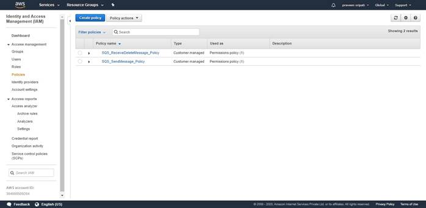
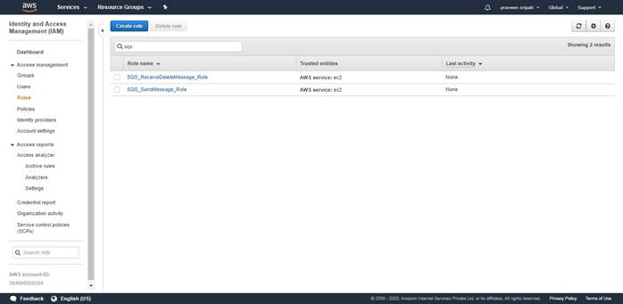
-- Create two EC2 Instances and name them as "CustomerWebApplication" and "BackendApplication" with the below details. Make sure to select the KeyPair.
- Ubuntu 18.04
- t2.micro
- SecurityGroup with 22/SSH inbound
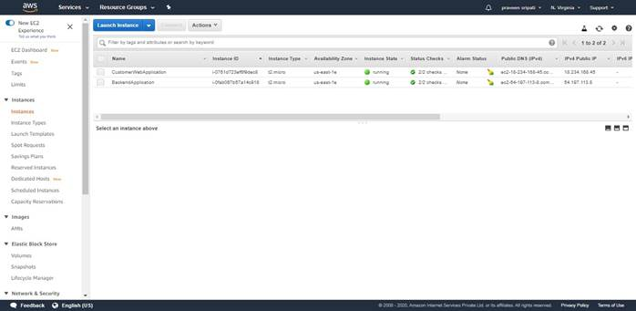
-- Login to the EC2 instances via Putty. Execute the below commands on both the EC2 instances. See the exception.
#become root
sudo su
#get the list of softwares
apt-get update
#install python
apt-get install -y python2.7 python-pip
#install Python AWS SDK and MySQL drivers
pip install boto3
pip install mysql-connector-python (only on the "BackendApplication" EC2 Instance)
exit
mkdir .aws
echo -e "[default]\nregion=us-east-1" > .aws/config
-- Attach the SQS_SendMessage_Role Role to the
"CustomerWebApplication" EC2 Instance.
Attach the SQS_ReceiveDeleteMessage_Role Role to the "BackendApplication" EC2 Instance.
-- Create a file send_message.py with the below code on the "CustomerWebApplication" EC2 instance. Make sure to change the queue_url. We are trying to mimic a web application where the customers can create an account and the customer details are put into a Queue.
import sys
import boto3
sqs = boto3.client('sqs')
queue_url = 'https://sqs.us-east-1.amazonaws.com/304000509264/CustomerQueue'
response = sqs.send_message(
QueueUrl=queue_url,
MessageBody=(sys.argv[1])
)
print(response['MessageId'])
-- Execute the below commands to put the messages in the Queue.
python send_message.py Praveen,Hyderabad
python send_message.py Prajval,Delhi
python send_message.py Kusuma,Mumbai
python send_message.py Prathibha,Bangalore
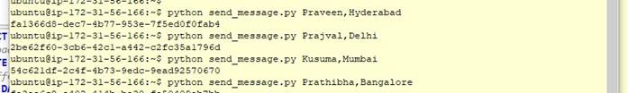
-- Create a file get_message_write_to_rds.py with the below code on the "BackendApplication" EC2 instance. Make sure to change the queue_url and the database details. The below program reads the message from Queue and inserts a row in the RDS/MySQL Database.
import time
import boto3
import mysql.connector
queue_url = 'https://sqs.us-east-1.amazonaws.com/304000509264/CustomerQueue'
#Specify the database details
host = 'customerdb.cmeeo0ikklen.us-east-1.rds.amazonaws.com'
user = 'praveen'
password = 'praveen123'
database='customer_db'
#Create a SQS Client
sqs = boto3.client('sqs')
#Connect to the RDS MySQL Instance
mydb = mysql.connector.connect(host=host, user=user, password=password,
database=database)
mycursor = mydb.cursor()
# Receive message from SQS queue
response = sqs.receive_message(QueueUrl=queue_url)
message = response['Messages'][0]
# Delete received message from queue
receipt_handle = message['ReceiptHandle']
sqs.delete_message(
QueueUrl=queue_url,
ReceiptHandle=receipt_handle
)
print('Received and deleted message: %s' % message["Body"])
#Get the customer name and address from the message
customerDetails = message["Body"]
customerDetailsList = customerDetails.split(',')
name = customerDetailsList[0]
address = customerDetailsList[1]
#Write the record to the database
val = (name, address)
sql = "INSERT INTO customers (name, address) VALUES (%s, %s)"
mycursor.execute(sql, val)
mydb.commit()
print("Record inserted in the DB")
-- Wait for a few minutes and execute the “python get_message_write_to_rds.py” command to get the message from the Queue and insert a row the database.
Here we are trying to mimic the backend application being down. Notice that the messages between the web application are not lost inspite of waiting for a few minutes or the backend application being down. This is how Highly Available applications are built.
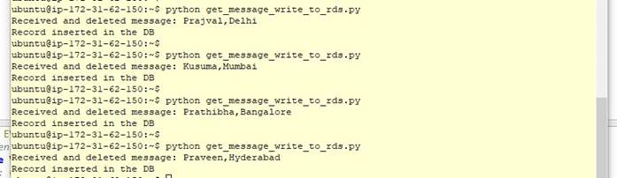
-- Go back to the HeidiSQL and execute the “select * from customers” query to fetch the customers details.
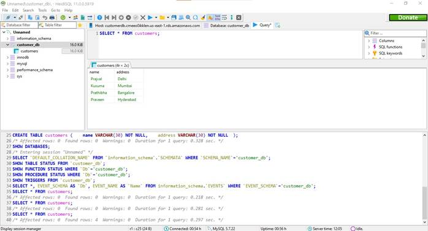